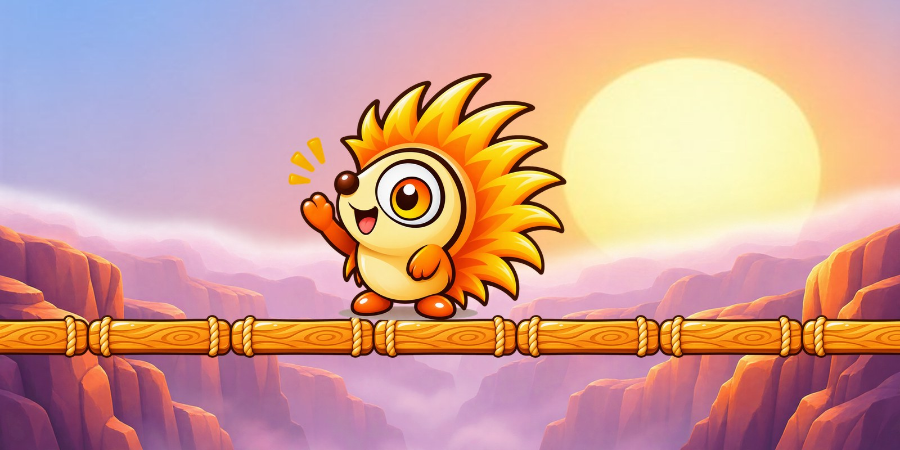
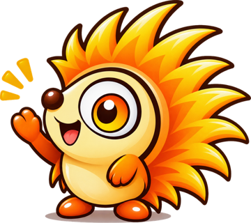

Il Ponte

Un gioco di squadra per le dirette sui social: tutta la chat aiuta un riccio ad attraversare un ponte che sta crollando alle sue spalle.
Che problema risolve
Durante una diretta serve un gioco che coinvolga tutti insieme, che faccia ridere e che chieda poco intervento a chi conduce. Il Ponte sceglie le parole, conta il tempo, ringrazia e riparte da solo: la conduttrice commenta e fa il tifo.
Come si gioca
- Gli spettatori indovinano parole scrivendo in chat: ogni parola indovinata costruisce nuove assi davanti al riccio.
- Alle sue spalle il ponte crolla un'asse alla volta. La partita finisce quando il crollo raggiunge il riccio.
- Toccando lo schermo (i "tap") il pubblico riempie una barra che dà dei puntelli per fermare il crollo nel momento giusto.
- I regali proteggono il riccio con bolle e ombrellini, ma non sono mai indispensabili: sono le parole a portarlo dall'altra parte.
- Non c'è chi vince contro gli altri: c'è un record di metri da battere, tutti insieme.
Le idee più interessanti
- Il gioco si adatta al pubblico: la velocità del crollo segue il ritmo con cui la chat indovina, così funziona sia con tanti spettatori sia con pochi.
- Regali senza sensi di colpa: nessuna scritta del tipo "se non doni, cade". Ogni regalo ha un effetto preciso e annunciato, niente estrazioni a sorpresa.
- Una mascotte con le emozioni: il riccio cambia faccia secondo il pericolo (tranquillo, preoccupato, spaventato) e cade rotolando a palla, momenti fatti per essere condivisi.
Il riccio e le sue emozioni



Come è fatto
Un programma per il computer che si apre con un doppio clic, come AgoraWord, e riceve i messaggi della chat della diretta. La scena animata è costruita con Phaser (un motore per giochi che gira nel browser). Il programma è diviso in tre parti separate: le regole del gioco, la grafica e il collegamento con la diretta. Le immagini del riccio e della scena sono generate con l'aiuto di ChatGPT.
Il mio ruolo
Ho ideato il gioco e le sue regole. Il codice è scritto con l'aiuto di Claude.
Stato
In uso nelle mie dirette sui social.